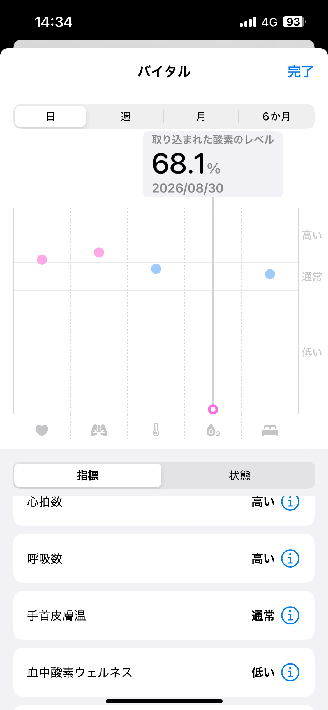

入山証は、出発前に。
事前に「静岡県FUJI NAVI」で手続きをして、入山証（QRコード）を取得。現地で提示できて、受付がスムーズだった。
事前登録の公式案内 ↗TRAVEL JOURNAL / 2026
雨を越えて、
雲の上の朝へ。
2026.08.28 — 08.30
三島前泊から、富士宮ルートで山頂泊。
THE TRIP AT A GLANCE
三島を拠点に、富士山の南側から山頂へ。
街で一泊、雲の上でもう一泊。
東京 → 三島
日本酒・川沿い散歩・屋台ラーメン
三島 → バス → 富士宮口五合目
10:00 登山開始 → 15:00ごろ 山頂着
剣ヶ峰・朝焼け → 下山 → 三島
極楽湯・うなぎ → 13:00ごろ 新幹線

三島駅と富士宮口五合目の位置情報から、直線距離約28.5kmを約30kmとして表示。登山道の片道4.3kmは五合目〜富士宮口山頂の公式案内によるものです（剣ヶ峰への移動は別）。地図の線は移動のつながりを表し、実際の道路・登山道の形は再現していません。
01 / the night before
夜の新幹線で三島へ。翌日の富士登山に備えて、ドーミーイン三島に前泊した。登山前の夜は、静岡の日本酒を楽しむところから。
食事を終えてから、三島の川沿いを散歩した。
02 / into the clouds
三島駅南口から、途中の停留所にも停まるバスで富士山表口五合目へ向かった。
7時はホテル出発の目安。バスの発車時刻・便名は未確認。
雨は降っていなかったけれど、曇っていて少し肌寒い。今回は五合目で長めに体を慣らす時間を取らずに出発した。
ここまでは比較的順調。その先から雨と風が激しくなり、特に風は飛ばされそうに感じるほど。かなり体力を消耗した。
耐えきれずに小屋へ入り、カレーを食べた。ここのスタッフは丁寧で優しく、印象に残っている。
八合目より上の山小屋で休憩。九合目か九合五勺か、小屋名はまだ思い出せていない。
「飛ばされるかと思った。」
台風並みに感じた、という当日の体感。
8月29日9:09、富士宮口山頂の現地投稿には、気温6.2℃・風速10〜12m/s、風向きが定まらず視界が悪いという報告がある。これは投稿者の現地記録で、昼間の登山地点の実測値や気象庁の観測値ではない。
mush（植田めぐみ）「荒天の１日」 ↗stay / chojo fujikan
雨風が収まる気配はなく、富士宮口山頂の「頂上富士館」まで進んだ。15時ごろ到着し、16時までは食堂のようなスペースで休憩。とにかく寒かった。
濡れた物は寝室に持ち込めず、食堂に置いていく必要があった。ほとんどの荷物が濡れていたので、着替え・上着・充電器など、濡れていない必要な物だけを抱えて中へ。チェックインの際も、濡れた物がないかしっかり確認された。
夜ごはんは、またカレー。昼も夜もカレーになった日。
この日は富士宮口の山頂で宿泊。日本最高地点・剣ヶ峰へは翌朝向かった。
それまでは高山病らしさを感じていなかったけれど、寝床は人がぎっしり。頭が痛くなり、1時間に1回くらい目が覚めていた。翌朝はApple Watchでも、普段と違うバイタルの通知を確認した。
高所では気圧が下がり、特に睡眠中は低酸素の影響が強まりやすい。頭痛は高山病の可能性もあり、室内の混雑や換気が原因だったとは断定できない。Apple Watchの値は医療目的の測定ではない。CDCの解説 / Appleの説明

03 / above the clouds
朝も頭は痛かったけれど、外に出ると良くなった。寝床は人でぎっしりだったが、そのことが原因だったかどうかは分からない。
小屋を出て、さらに登る。約20分で到着したのは、日本最高地点の剣ヶ峰。山頂の宿から、いちばん高い場所へ向かった朝。
約20分は今回の所要時間の目安。
ご来光を待ったものの、太陽が昇る瞬間は見られなかった。それでも、朝焼けのように色づく空を見ることができた。広がる雲海も、とても綺麗だった。
back to mishima
朝の景色を見てから一気に下山。五合目から9時20分ごろのバスで三島に戻った。帰りは、行きと違って三島まで直通の便だった。
乗車時刻は当日の記憶にもとづく目安。現在の時刻表を示すものではありません。
13時ごろの新幹線で東京に戻って帰宅。三島の前泊から始まった、2泊3日の旅が終わった。
things to remember
事前に「静岡県FUJI NAVI」で手続きをして、入山証（QRコード）を取得。現地で提示できて、受付がスムーズだった。
事前登録の公式案内 ↗公式では出発前に五合目付近で1〜2時間程度の休憩を案内している。次は到着してすぐ登り始めず、体を高度に慣らす時間も予定に入れたい。短い休憩だけで高山病を必ず防げるわけではない。
高山病について ↗宿で使う服と小物を、防水袋などで分けておくと出し入れもしやすい。濡れた物を寝室に持ち込まない決まりは、頂上富士館の施設案内にも記載されている。
頂上富士館の施設案内 ↗日程・時刻・感想は、当日の記憶と写真にもとづいています。昼食を取った山小屋の名前は未特定のため、「八合目より上の山小屋」として記録しました。